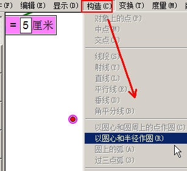

几何画板基础入门教程
作者：TeliuTe 来源：基础教程网
八、参数变量和标记距离 返回目录 下一课已知一个长度或角度，用参数变量来存入数值，再作出指定的几何图形来；
1、新建参数
1）画一个半径为3厘米的圆，首先点菜单“数据 - 新建参数”；
2）在出来的对话框，设定数值为3厘米，类型为距离，点确定出来一个式子；
3）文本框里的数字还可以修改，比如改成5厘米，这个参数值就是5了；
4）再用画点工具，画一个点，保持上边参数和点都选中；
5）点菜单“构造 - 以圆心和半径作圆”，画出一个圆，5厘米还是挺大的，保存文件；

2、画一个3厘米的等腰直角三角形
1）等腰直角三角形两个锐角是45度，点菜单“数据 - 新建参数”，设定一个45度的参数，另一个3厘米的参数；
2）选中3厘米的参数，点菜单“变换 - 标记距离”；
3）用“画点”工具，画一个点，然后选中“点”和距离参数，点菜单“构造 - 以圆心和半径作圆”；
4）点菜单“构造 - 圆上的点”，调整好位置，两个点之间构造一条线段；
5）选中圆心的点和线段，点菜单“构造 - 垂线”，得到90°的直角；

6）再同时选中圆，点菜单“构造 - 交点”；
7）选两个合适的点，构造一条线段，剩下的都隐藏，就可以得到一个等腰直角三角形；
8）将圆和垂线隐藏，三角形标记好字母和角度，在“度量”菜单里，测量一个锐角度数，应该是45°；

本节学习了使用参数和标记距离的基础知识，如果你成功地完成了练习，请继续学习下一课内容；
本教程由TeliuTe制作|著作权所有
基础教程网：http://teliute.org/
美丽的校园……
转载和引用本站内容，请保留作者和本站链接。